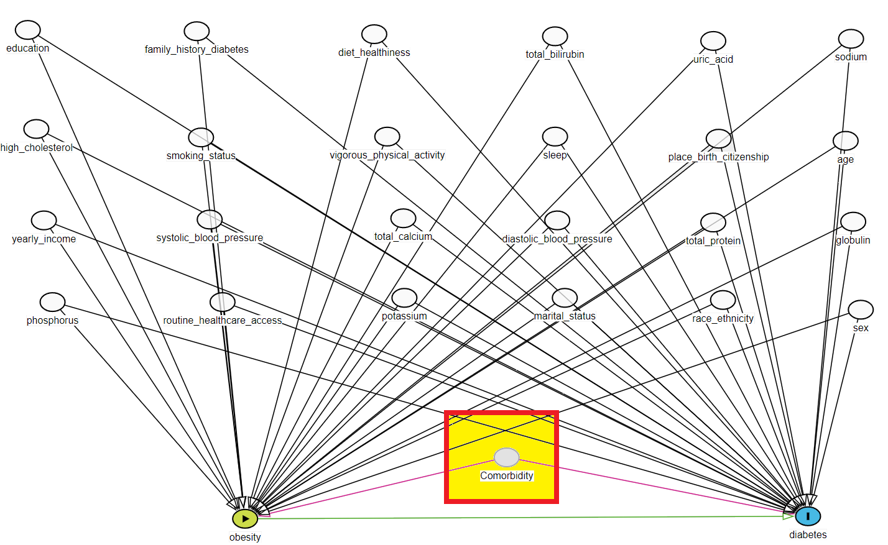
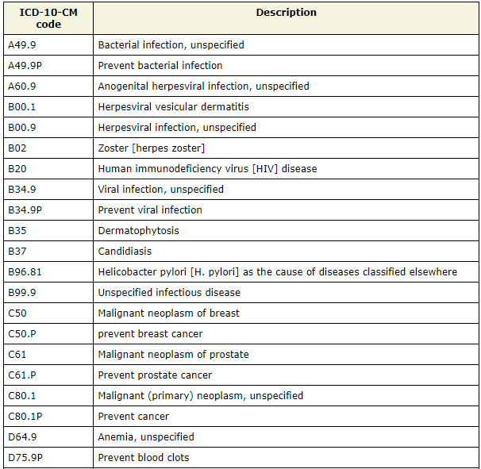

3 Reducing residual confounding
Pitfall of using observation data
Observational data sources like NHANES do not allow the user to control which variables are surveyed. Therefore, may variables necessary for a research questions may not be available.
As example of unmeasured confounding in the observational data, measuring comorbidity within NHANES is not straightforward.
3.1 Measuring comorbidity burden
In health research, the overall health status/ Disease burden could be a potential confounding factor. In the original DAG, we had comorbidity as a known confounder.
flowchart TB A[Obesity] --> Y(Diabete) L[Comorbidity measure unobserved] --> Y L --> A style A fill:#90EE90; style Y fill:#ADD8E6; style L fill:#FF0000;
Charlson Comorbidity Index (CCI) is a measure that quantifies the burden of comorbidities or pre-existing medical conditions in patients (takes into account 17 comorbidities), which can impact their health outcomes and overall survival.
Elixhauser Comorbidity Index (ECI) is a measure of the burden of comorbidities, based on 30 different comorbid conditions.
Chronic Disease Score (CDS) is a weighted score of the number and severity of chronic diseases, calculated using self-reported data on diagnosed conditions (considers the presence of 21 chronic conditions).
- (Charlson et al. 1987; Elixhauser et al. 1998; Von Korff, Wagner, and Saunders 1992)
- NHANES does not include information on all of the comorbidities included in theses scores / indices.
Residual confounding
Comorbidity scores are widely used as a measure of comorbidity burden, and their calculation often relies on data that may not be available in certain contexts, such as in NHANES or Canadian health administrative databases. In such cases, when comorbidity burden is a known confounder, researchers may use proxy information to approximate and mimic the information. Not being able to adjust for such variable can introduce bias and residual confounding in the treatment effect estimation.
3.2 Proxy Adjustment Empirical criterion
Empirical criterion: Modified disjunctive cause criterion
VanderWeele et al. 2019 European Journal of Epidemiology: CC BY license

Adjust for variables that are (a) causes of exposure or outcome or both, (b) discard: known instrument, (c) including good proxies for unmeasured common causes (VanderWeele 2019)
3.3 Additional information: ICD-10-CM
The International Classification of Diseases 10th Revision (ICD-10) is a standardized system of codes for the classification of diseases, disorders, and injuries.
| Role | Data Source | Variables considered |
|---|---|---|
| Role unclear as they may not directly relate to the research question | RXQ_RX | Prescription medication ICD-10-CM code |
RXQ_RX questionnaire (a) collects information on prescription medications taken in the past 30 days, (b) conducted by trained interviewers, and (c) with some quality control efforts.

We have a lot of information through these ICD-10-CM codes, but for most of these information, it is unclear what role they play within the context of our research questions.
Count of prescriptions is often used to measure comorbidity burden. This is not a perfect measure. But could serve as a proxy for our purpose.
Prescription medication (ICD-10-CM codes from all 3 cycles) data was liked with the initial data.